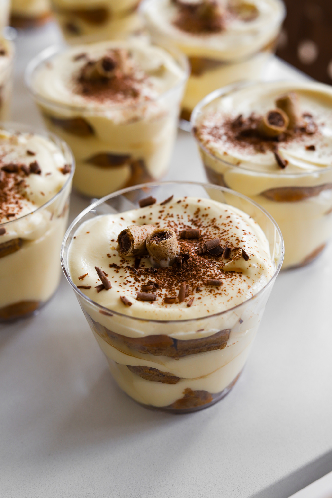
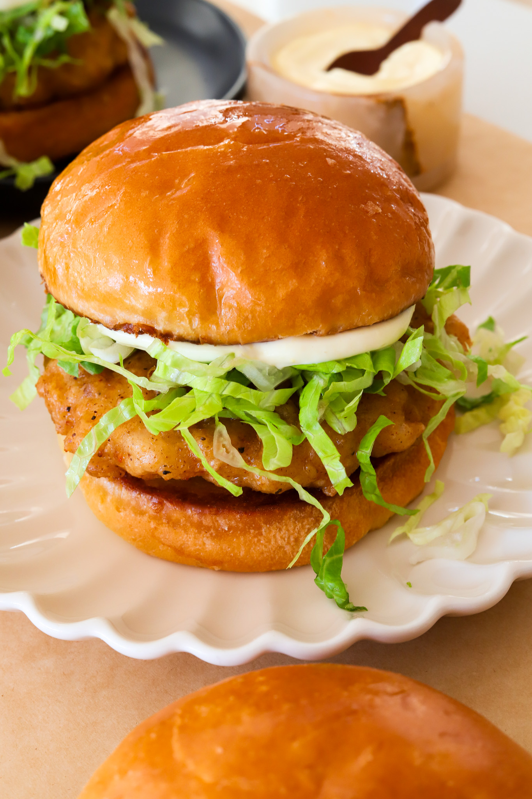
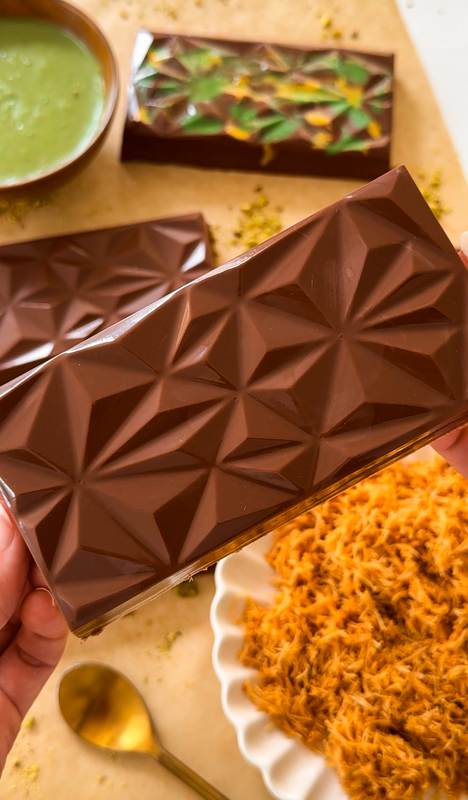

Soap Banana Toaster's Cookbook
DESSERT TIRAMISU CUPS

PREP TIME: 1 HOUR
TOTAL TIME: 1 HOUR
YIELDS: 12 CUPS
This is the tiramisu that will transport you straight to a cafe in
Italy! It’s rich and decadent and has all the flavors of the classic
Italian dessert from the espresso-soaked lady fingers to velvety
mascarapone cream filling. If you didn’t know, tiramisu means
“a pick me up” and that’s exactly what this sweet treat will do!
INGREDIENTS
CREAM FILLING
- 5 egg yolks
- 2/3 cup white sugar
- 1 1/3 cup heavy cream
- 16 ounces mascarpone cheese
- 2 teaspoons vanilla extract
FOR ASSEMBLY
- 2 packages ladyfingers, 7 ounces each
- 1 1/2 cup cold espresso
- 3 tablespoons brown sugar
INSTRUCTIONS
PREPARE THE CREAM FILLING
- In a medium-sized mixing bowl, whisk together the egg yolks and
sugar until thickened and lighter in color.
- In a separate large mixing bowl, beat the heavy cream and
vanilla extract until stiff peaks form.
- Gently fold the mascarpone cheese into the egg yolk mixture
until smooth and creamy.
- Gradually fold in the whipped cream until the mixture is well
combined and creamy. Be gentle to maintain the fluffy texture.
PREPARE THE LADYFINGERS
- In a shallow dish, mix the cold espresso with the brown sugar
until the sugar is dissolved.
- Dip each ladyfinger into the espresso mixture for a few seconds,
ensuring they are soaked but not soggy.
ASSEMBLE THE TIRAMISU CUPS
- In individual serving cups or glasses, place a layer of soaked
ladyfingers at the bottom.
- Spoon a layer of the cream filling over the ladyfingers,
spreading it evenly.
- Repeat the layers, alternating between soaked ladyfingers and
cream filling until the cups are filled, ending with a layer of
cream on top.
CHILL AND SERVE
- Cover the tiramisu cups with plastic wrap and refrigerate for at
least 4 hours, or overnight, to allow the flavors to meld and the
dessert to set.
- Before serving, you can dust the tops with cocoa powder or
grated chocolate for decoration if desired.
- Serve chilled and enjoy your delicious individual
tiramisu cups!
MAIN COURSE | RESTAURANT REMAKES MCCHICKEN MCDONALDS COPYCAT

PREP TIME: 1 HOUR
COOK TIME: 30 MINUTES
TOTAL TIME: 1 HOUR 30 MINUTES
YIELDS: 4 SANDWICHES
Craving that classic McDonald's McChicken but want something even
better? One bite of this McChicken made at home and you’ll be saying
McDonald's Who! This version not only nails the taste and texture
but kicks it up a notch with the special mayo and seasoned crispy
chicken patties!
INGREDIENTS
CHICKEN PATTY
- 1/2 pound chicken breast
- 1/2 pound chicken thighs, boneless and skinless
- 1 teaspoons salt
- 1/2 teaspoon white pepper
- 1/2 teaspoon onion powder
- 1/2 teaspoon garlic powder
- 1/2 teaspoon sage
BATTER
- 3/4 cup all-purpose flour
- 3/4 cup cornstarch
- 2 teaspoons baking powder
- 2 teaspoons salt
- 1/2 teaspoon black pepper
- 1 teaspoon paprika
- 1 teaspoon chili powder
- 1 teaspoon garlic powder
- 1/4 teaspoon baking soda
- 1 1/2 cup cold iced water
FOR ASSEMBLY
- 4 brioche buns
- butter, for toasting buns
- shredded lettuce
- 1/2 cup mayonnaise
- 1 tablespoon yellow mustard, more to taste
INSTRUCTIONS
MAKE THE CHICKEN PATTIES
- Chop the chicken into small pieces and add it to the food
processor along with salt, white pepper, onion powder, garlic
powder, and sage. Pulse until there are no more chunks of meat and
it sticks together. Do not over-pulse.
- Take 3 to 4 ounces of the chicken mixture and shape into a thin
patty. Place on a tray lined with parchment paper. Repeat until all
the chicken is shaped. Pop in the freezer for 30 minutes, or longer,
if it's still hard to handle.
- Heat a pot with about 1 to 1.5 inches of oil over medium heat to
about 325°F.
- In a large bowl, whisk together flour, cornstarch,
baking powder, salt, black pepper, paprika, chili powder,
and garlic powder.
- Coat each patty in the dry breading
and shake off any excess.
- Then add the water and baking soda to the dry batter and whisk
to create your wet batter. It should be thin
- add more water as needed.
- Dip the breaded nuggets in the wet batter and then place in the
hot oil. Do not overcrowd them.
Fry in batches until golden brown.
- Transfer to a wire rack to let any oil drain out.
MAKE THE SPECIAL MAYO
- In a small bowl, combine mayonnaise with mustard until smooth
and creamy! Set aside.
ASSEMBLY
- Butter the buns and toast them in a pan over medium heat or in
the oven at 350°F for 5 to 6 minutes.
- Assemble the toasted buns with the chicken patty, lettuce, and
mayo sauce. Close up and enjoy fresh!
DESSERT PISTACHIO CHOCOLATE BAR

PREP TIME: 1 HOUR
TOTAL TIME: 1 HOUR
YIELDS: 4 CHOCOLATE BARS
The viral Kanafeh-inspired Chocolate Bar from a dessert spot called
The Fix in Dubai has been going viral and since lots of us are a
plane ride away, we're going to make it at home and even better!
Oozing with pistachio butter and crispy toasted shredded phyllo
bits, this chocolate is the definition of indulgence. Every single
bite is so creamy but also so crispy at the same time and the taste
is so reminiscent of everyone's favorite Arab dessert!
INGREDIENTS
- 1 cup pistachio paste/butter
- 1 to 1/2 cup shredded phyllo or kataifi, cut
into small pieces
- vegetable oil, for frying
- 2 to 3 cups milk chocolate, melted
- 1/4 cup white chocolate, melted
INSTRUCTIONS
- Heat vegetable oil in a frying pan to 350°F.
- Add the shredded phyllo in and fry until golden and crispy. If
frying another batch, use a slotted spoon to take
out the fried phyllo. Transfer to a plate with a paper towel
to drain excess oil.
- If you are not frying another batch, it'll be easier to set up a
bowl with a strainer and pour the pan over to let the oil drain and
the strainer catch the phyllo.
- Allow the fried phyllo to cool down for 15 minutes.
- Add the pistachio paste to a mixing bowl along with the fried
phyllo and mix together to combine.
- OPTIONAL: To the chocolate mold, add a light drizzle
of white chocolate.
- Then add in about 1/4 cup or more of melted milk chocolate and
shake it around to cover the bottom and sides completely.
- Pop in the fridge or freezer for 10 to 15
minutes until hard.
- Take the mold out and fill the chocolate mold with the pistachio
and phyllo mixture almost all the way to the top.
- Cover the filling entirely with more melted chocolate and pop it
back in the fridge or freezer for 10 to 15 minutes until hard.
- Once set, pop out of the mold and enjoy!